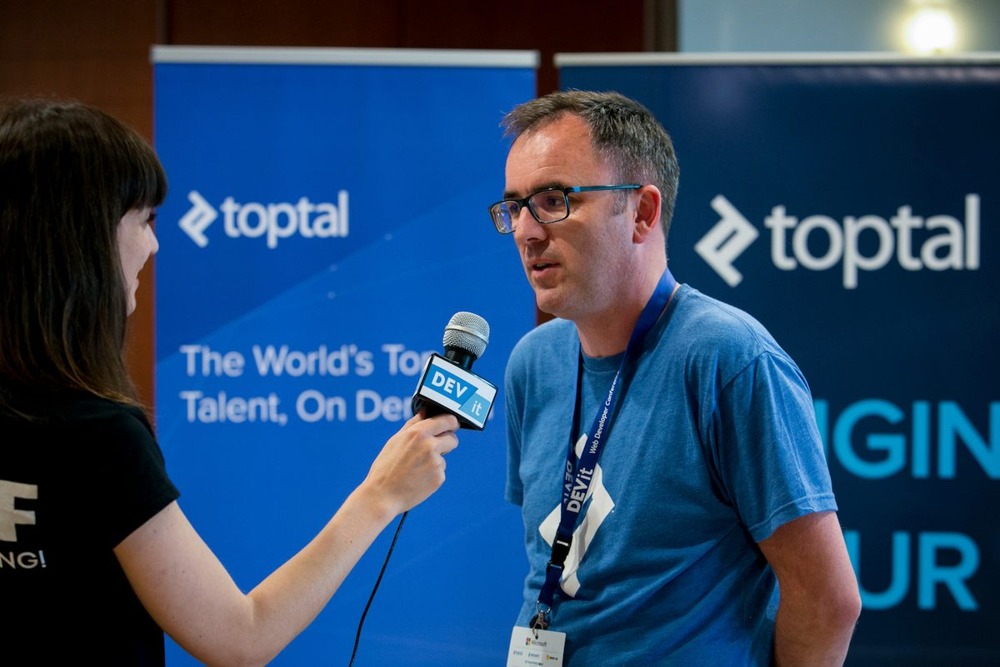
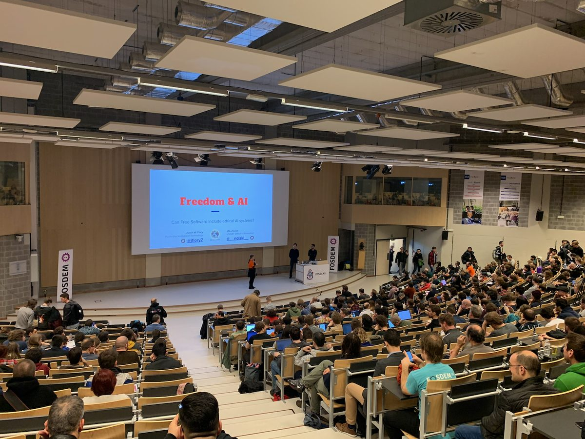
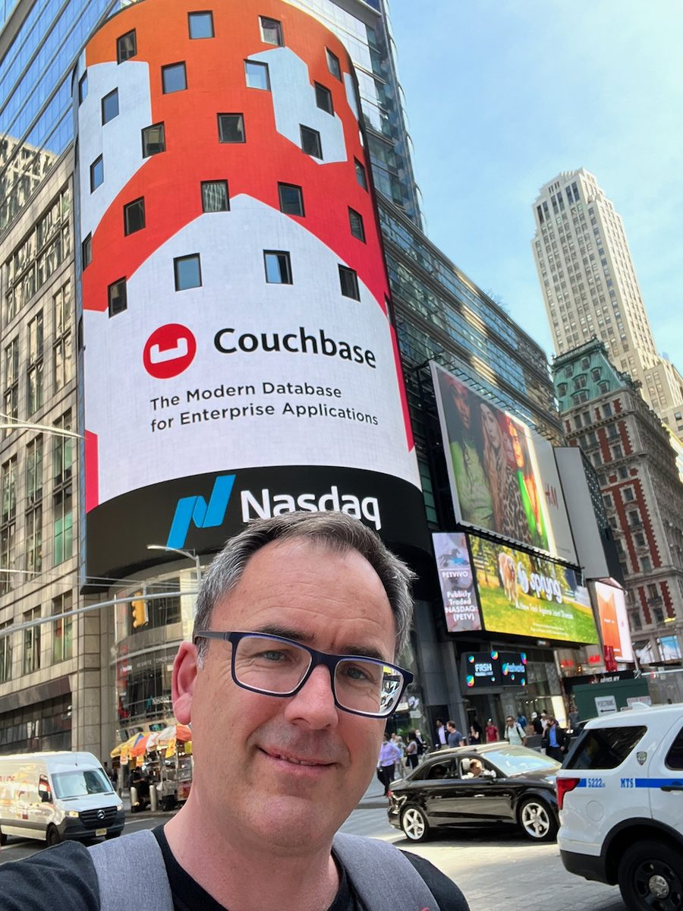
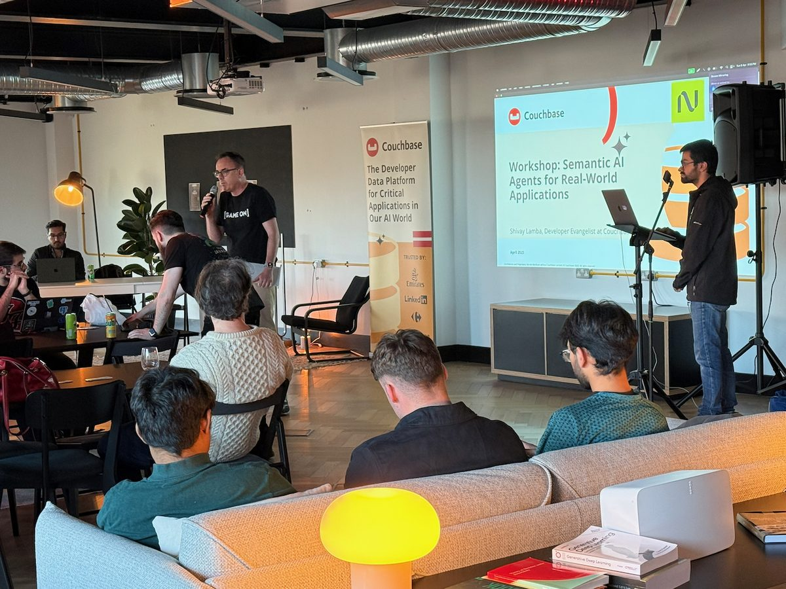

I believe the most powerful force in technology is not a product — it's a community that believes in something. My work is building those communities, and connecting them to real business outcomes.




I'm a community and developer engagement leader with 12+ years of experience building the programmes, structures, and cultures that turn technology organisations into movements people want to be part of.
My career has spanned open-source foundations, enterprise software, and the startup world — from co-founding the Mozilla Reps volunteer leadership programme to serving on the Marketing Leadership Team at a global database company, where community became a measurable commercial growth lever. I know how to lead cross-functionally: aligning community strategy with product, marketing, and sales to drive outcomes that show up on the board deck.
I've led change at scale — introducing new governance frameworks, ambassador tiers, AI-era tooling strategies, and community platforms into organisations where these things didn't exist before. I'm equally comfortable influencing C-suite stakeholders as I am rolling up my sleeves with a community of developers.
At heart, the why is simple: I believe communities are the most durable competitive advantage a technology company can build. When people feel genuine belonging, they become advocates, contributors, and evangelists — not because they're paid to, but because they care.
Community leadership doesn't happen in a vacuum. The field has a growing body of serious thinking behind it — and I believe the leaders doing the best work are those who combine hands-on instinct with a clear intellectual framework. Here are the ideas I return to most.
Derek Weeks argues in Unfair Mindshare that community is not a soft, feel-good investment — it's a hard-edged commercial strategy. When community is integrated with demand generation and brand, it creates compounding advantages that paid marketing simply cannot replicate. This thinking directly informed how I've built programmes that showed up on revenue dashboards.
Priya Parker's The Art of Gathering reframes how we think about bringing people together — arguing that most gatherings fail not from lack of effort, but from lack of purpose. Her thinking has sharpened how I design community experiences: from developer events and ambassador summits to online forums. The best communities aren't just spaces to be in — they're gatherings with a reason to exist.
I work at the intersection of community, developer engagement, open source, and enterprise marketing — helping technology organisations build the programmes, ecosystems, and cultures that drive real growth.
Whether you're looking for a senior leader, a strategic advisor, or just want to compare notes on what's happening in open source and AI — I'd love to hear from you.